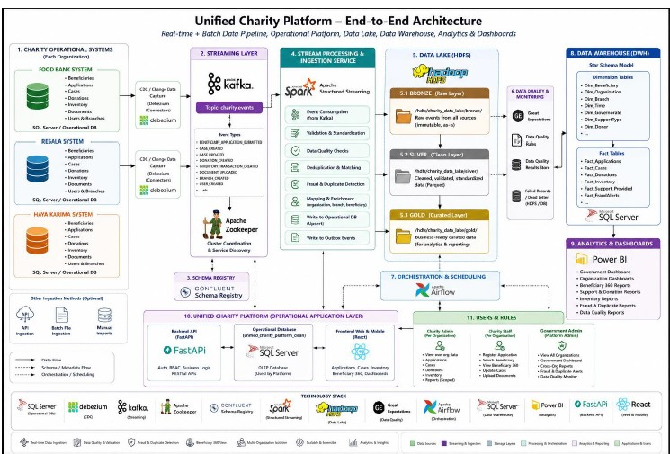

Graduation Project · Team of 4
View on GitHub →
Aoun: Unified Charity Data Engineering Platform
Charity organizations keep beneficiary, case, and donation records in separate systems, which makes duplicate support hard to detect and reporting unreliable. Aoun unifies data from 3 charity organizations into one governed analytics platform.
SQL Server3 charity DBs→
DebeziumCDC→
Kafka+ Schema Registry→
SparkBronze → Silver → Gold→
HDFSData lake→
SQL Server DWHStar schema→
Power BI
My contribution
- Orchestration: built an Apache Airflow DAG (8 tasks) that runs infrastructure health checks, then the Spark Bronze, Silver, and Gold jobs, the warehouse load, and data quality validation in order.
- Data warehouse: implemented a SQL Server star schema with 3 dimension tables (organization, beneficiary, donor) and 4 fact tables (applications, cases, donations, inventory), loaded from the Gold layer with PySpark over JDBC.
- Data quality: developed a PySpark framework with 7 check types (not-null, required columns, duplicate keys, allowed values, numeric ranges, row counts) across Silver, Gold, and the warehouse, with PASS/WARN/FAIL reporting and failed records saved to HDFS.

Debezium CDCKafkaSchema RegistryPySparkHDFSMedallion ArchitectureSQL ServerAirflowData QualityPower BI